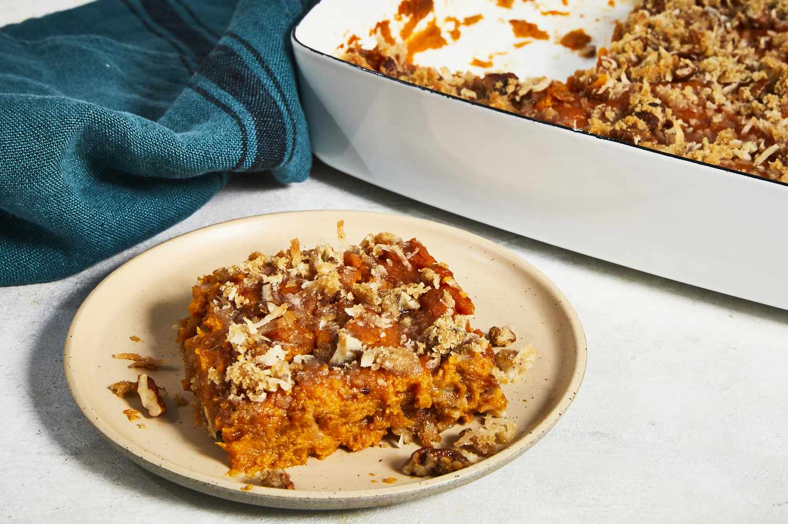

Sweet Potato Crunch

This sweet potato crunch is a fun and yummy dish for Thanksgiving. People who don't eat sweet potatoes usually love it!
Ingredients
- 6 sweet potatoes
- ⅓ cup butter
- 2 tablespoons white sugar
- 2 large eggs, beaten
- 1 teaspoon vanilla extraxt
Crunch Topping
- ¾ cup brown sugar
- ¾ cup sweetened flaked coconut
- ¾ cup chopped pecans
- 3 tablespons all-purpose flour
- 3 tabels poons melted butter
Steps
- Place sweet potatoes into a large pot and cover with salted water; bring to a boil.
Reduce heat to medium-low and simmer until tender, 20 to 30 minutes. Drain and peel.
- Preheat the oven to 325 degrees F (165 degrees C).
- Mash sweet potatoes, 1/3 cup butter, and white sugar together in a bowl.
Beat milk, eggs, and vanilla into sweet potato mixture using an electric mixer until smooth; pour 1/2 of the mixture into a 9x13-inch casserole dish.
- Make the topping: Mix brown sugar, coconut, pecans, and flour together in a bowl; stir in 3 tablespoons melted butter until evenly coated.
Sprinkle 1/2 of the topping over sweet potato mixture in the baking dish. Pour remaining sweet potato mixture over topping and sprinkle with remaining topping.
Return to Index